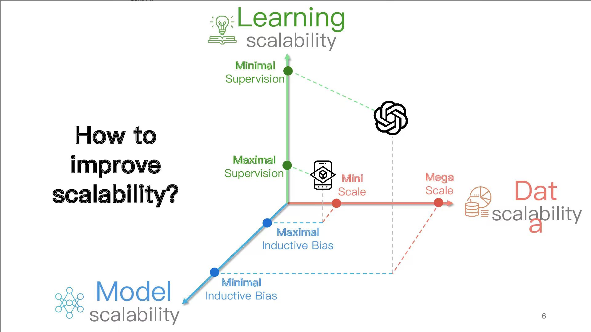
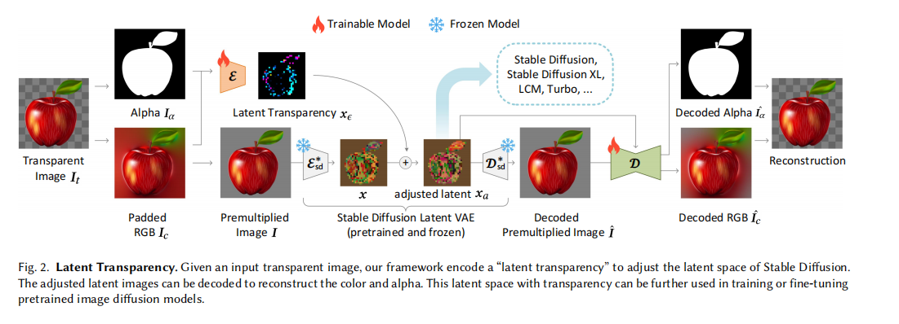
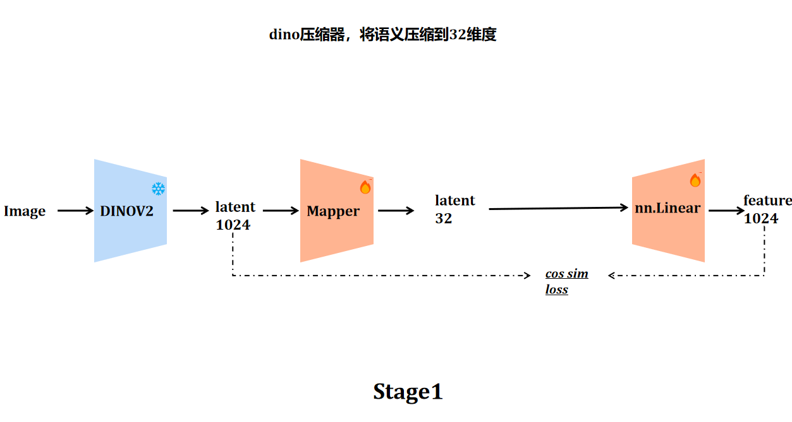
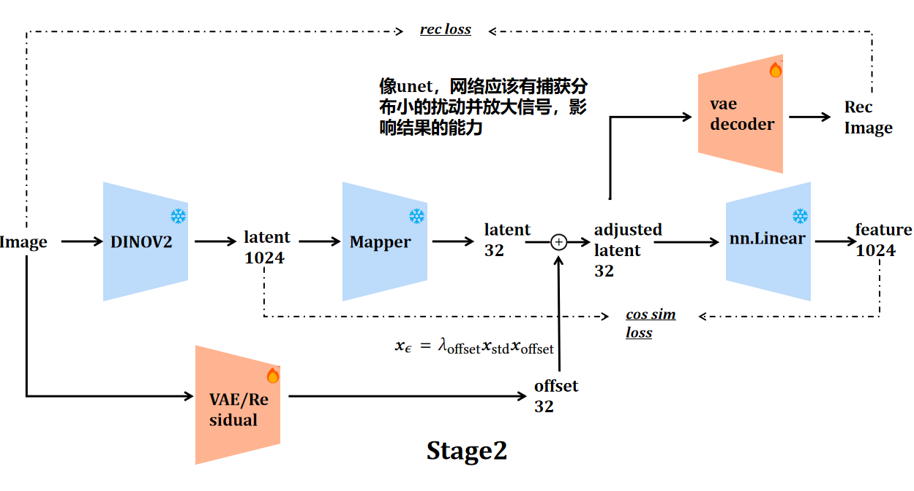

视觉表征漫谈2——VFM Tokenizer Design Space for Image Generation
上一次我们聊到了 VAVAE[1] 和 RAE[2] 类工作的困境，以及可能的解法。

这种解法可能是 DINOv4 探索的方案——一个在训练 VFM 的时候就能够良好保持住结构等信息的、模型参数量大的、数据更 diverse 的（比如见过很多字，这样高频信息的 gap 似乎有机会弥补），这样训练出来的 tokenizer 既保持了语义，又具备了很好的重建能力，但似乎是很久之后才会做到的事情。
有没有真的很优雅的解法？

图像水印学说–将图像"藏"进噪声
很久之前读过一篇工作——LayerDiffuse[3]（2402.17113）。它要解决的问题很具体：如何让已经训练好的 Stable Diffusion 直接生成带透明度（alpha channel）的图像，而不破坏原有的生成质量。
在这篇文章的 Related Work 2.1 节中，作者回顾了一个在多个领域都被反复验证的现象：神经网络可以将一种信息"藏"在另一种信息的扰动里，且不改变整体的特征分布。CycleGAN[4] 最早展示了这件事——face-to-ramen 实验里，人脸的身份信息可以在视觉上完全隐匿于一碗拉面的图片之中；可逆下采样和可逆灰度化的工作进一步证明，一张完整的大图可以被编码进一张更小的图而不损失任何信息；Goodfellow 的对抗样本研究则从另一个侧面佐证了这一点——人眼不可见的微小扰动可以携带足以"欺骗"神经网络的完整语义信号。
LayerDiffuse[3:1] 把这个原理直接用在了 latent space 上：将 alpha channel 信息编码为一个幅度受约束的 latent offset，注入到 SD 的 latent 中，同时用分布对齐约束确保 latent 的统计特性不变。这样，原来对透明度一无所知的扩散模型，可以在几乎不改变原始 latent 空间结构的前提下，"感知"到被隐藏进去的透明度语义，而已有的 ControlNet、LoRA 等生态也可以无缝复用。
这个想法是否可以平行地迁移到 VFM tokenizer 的困境上？


DINO 的语义是否可以被"藏"进VAE latent中？
SVG[5] 和 RAE[6] 给出的方案，本质上都是重建和生成的trade-off——要么拼接 DINO 特征，要么直接替换 VAE。这两种方式都不可避免地改变了 latent 的维度和分布，下游的 DiT 必须针对新 latent 从头训练，已有的 SD 生态也很难复用。此外，现在的方案如果语义有大幅提升，重建性能必然大幅缩水；反之亦然。
但如果借鉴 LayerDiffuse 的思路，问题就可以换一种方式提出：能否学到一个轻量的映射
该方案需要同时满足三重约束：latent 的分布不能漂移（否则已有的 DiT 会失效），VAE decoder 的重建质量不能下降，同时修正后的 latent 对 DINO 特征的语义相似度要显著高于原始 latent。
如果这种特征隐写可以成功，那么：已有的 DiT 可以直接在新的 latent 上 fine-tune，无需改架构，无需重新训练 tokenizer，重建性能与VAE相当，rfid指标更好。此外，因为 latent 里天然携带了语义结构，训练收敛也会更快，最终的语义含量更高，gfid指标更好。
理论上为什么这件事可能是对的？
LayerDiffuse[3:2] 的分布对齐约束提供了一个直接可用的ref – 把 offset 的均值和方差强制对齐到原始 latent 的统计量上：
SVG[5:1] 的 distribution alignment 做的是完全相同的事，只是应用在了不同的地方。在合适的约束下，信息可以被完整地编码进一个分布不变的扰动中，并且可以被准确还原。我们想做的事情，在 INN 的框架下，是被证明可行的。
A future design space to be continued…
这个方向我在实习后期花了相当长的时间尝试，最终没有训出一个收敛的版本。
实验时，最核心的难点是 offset 幅度的控制和如何让decoder感知到这个微小的
参考文献
Jingfeng Yao et al. “Reconstruction vs. Generation: Taming Optimization Dilemma in Latent Diffusion Models.” CVPR 2025. arXiv: 2501.01423 ↩︎
Sihyun Yu et al. “Representation Alignment for Generation: Training Diffusion Transformers Is Easier Than You Think.” ICLR 2025. arXiv: 2410.06940 ↩︎
Zhang, Lvmin, and Maneesh Agrawala. “Transparent image layer diffusion using latent transparency.” arXiv preprint arXiv:2402.17113 (2024). ↩︎ ↩︎ ↩︎
Zhu, Jun-Yan, et al. “Unpaired image-to-image translation using cycle-consistent adversarial networks.” Proceedings of the IEEE international conference on computer vision. 2017. ↩︎
Minglei Shi et al. “Latent Diffusion Model without Variational Autoencoder.” ICLR 2026. arXiv: 2510.15301 ↩︎ ↩︎
Boyang Zheng et al. “Diffusion Transformers with Representation Autoencoders.” ICLR 2026. arXiv: 2510.11690 ↩︎